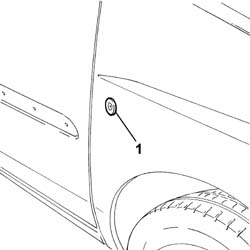
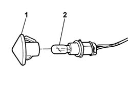
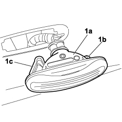
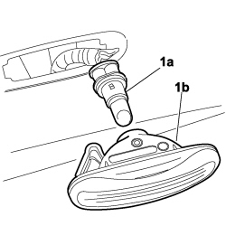

5550C22 l/h or r/h side flasher (one) - r+r
- Path
- Procedures > 55 ELECTRICAL EQUIPMENT > 5550 MANOEUVRING AND WARNING SIGNALS > 5550C turn signal/hazard warning lights > 5550C22 l/h or r/h side flasher (one) - r+r
- Kind
- repair procedure (removal / refitting; the operation number is the code)
- Applies to
- all engines; all production periods
- Interactive page
- https://sloeber94.github.io/elrnDB-fDbl/en/#/2584953
Applies to: engines: 1.2 8v, 1.6 16v, 1.3 JTD 16V, 1.9 JTD 8V, 1.9 DIESEL; all production periods
 Removing
Removing
 Refitting
RefittingDisconnect the battery negative terminal.
1. Remove the side repeater from its seating, taking care not to damage the bodywork.

Applies to: engines: 1.2 8v, 1.6 16v, 1.3 JTD 16V, 1.9 JTD 8V, 1.9 DIESEL; all production periods
1. Slightly rotate and remove the bulb's outer protection.
2. Remove the bulb.

Applies to: engines: 1.2 8v, 1.6 16v, 1.3 JTD 16V, 1.9 JTD 8V, 1.9 DIESEL; all production periods
Refitting
RemovingFit the bulb and the plastic outer protection.
Fit the complete side repeater in its seating.
Applies to: engines: 1.4 8v, 1.6 16v, 1.3 JTD 16V, 1.9 JTD 8V; production: da 12/03; only with equipment: MY 2005
Removing
Refitting1. Extract the side repeater (1a) releasing the retainers (1b) and then (1c).

Applies to: engines: 1.4 8v, 1.6 16v, 1.3 JTD 16V, 1.9 JTD 8V; production: da 12/03; only with equipment: MY 2005
1. Rotate the bulb holder (1a) and extract it from the side repeater (1b).

Applies to: engines: 1.4 8v, 1.6 16v, 1.3 JTD 16V, 1.9 JTD 8V; production: da 12/03; only with equipment: MY 2005
Refitting
Removing- Check that the side repeater is not damaged.
- Fit the bulb holder in the side repeater rotating it appropriately.
- Fit the side repeater in place attaching the retainers.